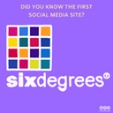
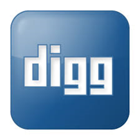

Internet är ett globalt nätverk av datorer och andra enheter som är sammankopplade för att utbyta data och kommunikation via olika protokoll
Internet har revolutionerat sättet människor kommunicerar, lär sig och bedriver affärer. Det har gjort information och resurser tillgängliga överallt och när som helst, vilket har möjliggjort globala samhällsförändringar, ekonomisk utveckling och har även varit basen för politiska rörelser.
Beskrivning: ARPANET var det första nätverket som använde paketväxling för att tillåta flera datorer att kommunicera på en enda kommunikationslänk. Lanserat av ARPA (Advanced Research Projects Agency), en del av USA:s försvarsdepartement, syftade projektet till att skapa ett nätverk som kunde överleva betydande skador, till exempel under krig.
Samhällelig påverkan: ARPANET lade grunden för dagens internet, vilket inte bara förändrade teknologins framtid utan också banade väg för en ny era av informationsdelning och kommunikation. Det har möjliggjort omedelbar och global kommunikation.
1950~1989
1969
Beskrivning: Den första e-posten skickades av Ray Tomlinson till sig själv i slutet av 1971. Han använde symbolen "@" för att separera användarnamnet från datornamnet, något som fortfarande används idag. Meddelandet var enkelt och experimentellt i sin natur.
Samhällelig påverkan: E-posten revolutionerade kommunikation genom att erbjuda ett snabbt, effektivt och kostnadseffektivt sätt att utbyta information. Den har haft stor betydelse för både personliga och professionella relationer, globalt samarbete och har standardiserat digital kommunikation världen över.
1971
Beskrivning: Under det tidiga 1980-talet övergick ARPANET från sitt ursprungliga protokoll NCP till TCP/IP. Detta beslut, som trädde i kraft den 1 januari 1983, var avgörande för att skapa ett mer öppet och lättillgängligt nätverk.
Samhällelig påverkan: Bytet till TCP/IP möjliggjorde skapandet av en global "nätverk av nätverk" som vi nu känner som internet. Detta öppnade för enastående tillväxt i nätverksinfrastruktur och stimulerade skapandet av nya digitala tjänster och industrin som helhet, vilket har haft varaktiga effekter på global kommunikation och ekonomi.
1983
Beskrivning: DNS (Domain Name System) introducerades 1985 för att hantera ökningen av antalet användare och enheter anslutna till internet. Systemet omvandlar användarvänliga domännamn (som google.com) till de numeriska IP-adresser som nätverket använder för att lokalisera datorer och andra enheter.
Samhällelig påverkan: DNS har varit avgörande för att göra internet tillgängligt och lättanvänt för allmänheten. Genom att förenkla sättet människor navigerar på nätet har DNS haft en central roll i internets spridning.
1985
Beskrivning: America Online (AOL), lanserat 1985, blev en av de första tjänsterna som erbjöd omfattande internetåtkomst till konsumenter, inklusive e-post, webbläsning och en rad andra online-tjänster.
Samhällelig påverkan: AOL spelade en viktig roll i att introducera internet för massorna, speciellt i USA. Genom att tillhandahålla ett användarvänligt gränssnitt och tillgänglig kundtjänst, hjälpte AOL till att demystifiera internet för allmänheten och bidrog till dess snabba spridning under 1990-talet.
1988
Beskrivning: Internet Relay Chat (IRC) skapades 1988 och blev en av de första formerna av realtids digital kommunikation. IRC tillät användare att kommunicera direkt över internet genom olika offentliga och privata kanaler.
Samhällelig påverkan: IRC skapade väg för senare kommunikationsplattformar som instant messaging och sociala medier. Genom att tillhandahålla en plattform för direkt och öppen kommunikation, spelade IRC en viktig roll i utvecklingen av onlinegemenskaper och kulturen på internet.
1988
Beskrivning: Tim Berners-Lee föreslog och utvecklade World Wide Web 1989 som ett sätt att göra information lättillgänglig och navigerbar genom användning av hyperlänkar. Webben använde Internet som ryggrad för att skapa ett globalt informationssystem.
Samhällelig påverkan: World Wide Web förändrade grundläggande internetanvändning genom att göra det mycket enklare för människor att skapa, dela och konsumera innehåll. Detta ledde till en informationsexplosion och har påverkat nästan alla aspekter av det moderna livet, från utbildning och regeringar till privatliv och underhållning.
1989
Beskrivning: Den första sökmotorn, Archie, skapades 1990 av Alan Emtage. Archie var designad för att indexera FTP-arkiv och hjälpa användare att hitta specifika filer.
Samhällelig påverkan: Archie revolutionerade hur information hittades på internet, vilket ledde till utvecklingen av mer avancerade sökmotorer som Google. Detta gjorde internet mer navigerbart och användbart för allmänheten och blev grunden för enorma informationsmängder som enkelt kunde sökas och åtkommas.
1990~2000
1990
Beskrivning: Den första webbsidan skapades av Tim Berners-Lee och publicerades den 6 augusti 1991. Sidan fungerade som en guide till World Wide Web och var värd på CERN.
Samhällelig påverkan: Denna första webbsida lade grunden för det explosionsartade innehållstillväxten på internet. Den introducerade konceptet med webbsurfing och möjliggjorde en enorm spridning av information och digitala tjänster, vilket förändrade sättet vi konsumerar information, utbildar oss och kommunicerar.
1991
Beskrivning: Den första webkameran sattes upp vid Universitetet i Cambridge 1991 för att övervaka en kaffekanna. Detta gjordes så att forskare inte skulle missbruka kaffemaskinen.
Samhällelig påverkan: Även om den ursprungliga användningen var praktisk och humoristisk, visade webkamerans utveckling och spridning potentialen för realtidsövervakning och kommunikation via internet. Detta öppnade dörren för allt från videosamtal till övervakningssystem, vilket påverkar både privatliv och affärsvärlden.
1991
Beskrivning: Det första fotot som laddades upp till internet var en bild av Les Horribles Cernettes, en parodisk popgrupp vid CERN, som laddades upp av Tim Berners-Lee.
Samhällelig påverkan: Detta markerade en viktig punkt i internetets historia genom att introducera möjligheten att dela grafiska bilder. Detta ökade webbens attraktivitet och användbarhet.
1992
Beskrivning: I USA introducerade president Bill Clinton och vicepresident Al Gore initiativ som syftade till att utöka internetåtkomsten, vilket inkluderade att göra internet tillgängligt i alla klassrum.
Samhällelig påverkan: Dessa initiativ ledde till en dramatisk ökning av internettillgängligheten och användningen.
1993
Beskrivning: Den första dokumenterade säkra e-handelstransaktionen genomfördes 1994 när Dan Kohn sålde en CD av Sting via sin webbplats NetMarket, med hjälp av krypteringsteknik för att säkra kreditkortsuppgifter.
Samhällelig påverkan: Denna händelse öppnade dörren för e-handel, vilket förändrade detaljhandeln genom att tillåta människor att tryggt köpa varor online.
1994

Beskrivning: Six Degrees lanserades 1996 och anses vara den första sociala medieplattformen, där användare kunde skapa profiler, bli vänner med andra användare och dela information.
Samhällelig påverkan: Introduktionen av sociala medier förändrade fundamentalt hur människor interagerar, delar information och organiserar sig socialt och politiskt. Det har haft en djupgående effekt på sociala normer, affärer och politik världen över.
1996
Beskrivning: Wi-Fi-tekniken (IEEE 802.11) standardiserades 1997, vilket möjliggjorde trådlös kommunikation över korta avstånd
Samhällelig påverkan: Wi-Fi har spelat en avgörande roll för att ge tillgång till internet utan fysiska anslutningar.
1997
Beskrivning: Google grundades av Larry Page och Sergey Brin 1998. Företaget revolutionerade informationssökning med sina algoritmer som rangordnar sidor baserat på länkpopularitet.
Samhällelig påverkan: Googles sökmotor har dramatiskt förändrat hur vi söker och hanterar information, vilket gör det möjligt för användare att snabbt få tillgång till en enorm mängd data. Detta har påverkat utbildning, forskning och beslutsfattande på alla nivåer.
1998
Beskrivning: Wikipedia, den fria encyklopedin som alla kan redigera, grundades av Jimmy Wales och Larry Sanger. Plattformen tillåter användare världen över att skapa och redigera artiklar.
Samhällelig påverkan: Wikipedia har demokratiserat tillgången till information och kunskap, vilket har gjort det möjligt för människor över hela världen att få tillgång till och dela kunskap. Det har haft stor inverkan på utbildning, forskning och tillhandahållandet av information.
2000~2009
2001
Beskrivning: MySpace, grundat 2003, snabbt blev den ledande sociala medieplattformen och var särskilt populär bland ungdomar och musikband.
Samhällelig påverkan: MySpace introducerade konceptet av personliga profiler och nätverksbyggande online och blev en viktig plattform för musikpromotion. Detta skapade väg för en ny era av sociala medier och hade en stor inverkan på hur kulturellt innehåll distribueras och konsumeras.
2001

Beskrivning: Digg lanserades som en social nyhetsaggregator där användare kunde rösta på artiklar så att populära nyheter dök upp på förstasidan.
Samhällelig påverkan:Digg förändrade mediekonsumtionen genom att ge användarna makten att påverka vilka nyheter som blir populära. Detta koncept påverkade senare utvecklingen av andra sociala medieplattformar och har bidragit till hur nyheter och information sprids på internet.
2004
Beskrivning: Apple lanserade iPhone, vilket revolutionerade smarttelefonmarknaden med dess innovativa användargränssnitt och funktionalitet.
Samhällelig påverkan: iPhone och efterföljande smarttelefoner har omdefinierat mobilitet, vilket gör internet tillgängligt på språng. Detta har accelererat tillväxten av mobila applikationer, förändrat konsumentbeteendet och drivit på innovationer inom mobila teknologier och tjänster
2007
Beskrivning: Bitcoin, den första decentraliserade kryptovalutan, lanserades av en anonym person eller grupp under pseudonymen Satoshi Nakamoto.
Samhällelig påverkan: Bitcoin har inlett en finansiell revolution genom att erbjuda ett alternativ till traditionella valutor och betalningssystem. Det har stimulerat skapandet av en helt ny industri kring blockchain-teknologi och har ifrågasatt hur vi tänker på pengar och finansiell integritet.
2009
Beskrivning: ICANN genomförde viktiga förändringar i sin policy, inklusive införandet av nya generiska toppdomäner (gTLDs) och förbättrad support för internationella domännamn (IDNs).
Samhällelig påverkan: Dessa förändringar har bidragit till en ökad globalisering och lokaliseringsanpassning av internet, vilket möjliggör för fler människor och företag världen över att uttrycka sig på sitt eget språk och kulturella kontext på nätet. Detta har ökat internets tillgänglighet och mångfald.
2009
Beskrivning: Under COVID-19-pandemin övergick människor i stor utsträckning till att arbeta hemifrån, vilket innebar en ökad användning av digitala verktyg för arbete. Detta ledde till en ökad popularitet för videokonferensprogram, produktivitetshanteringsprogram och online-samarbetsytor.
Samhällelig påverkan: Denna förändring har haft djupa effekter på arbetslivet, arbetsmiljön och företagskulturen globalt. Företag har snabbt anpassat sig till nya former av arbete, vilket har lett till både utmaningar och möjligheter i form av flexibilitet, balans mellan arbete och privatliv samt krav på digital infrastruktur. Distansarbete har också intensifierat diskussioner om digital klyfta och tillgång till pålitligt internet.
2020 - Nu
2001
Beskrivning: ChatGPT, en AI-plattform för att generera text, samla information och mer, lanserades officiellt. Detta verktyg använder avancerad språkmodellering för att tillhandahålla interaktiva och informativa svar baserade på naturligt språk.
Samhällelig påverkan: ChatGPT har introducerat en ny dimension av interaktion med AI, vilket påverkar allt från kundtjänst och utbildning till innehållsskapande. Det höjer frågor om AI:s roll i samhället, dess etiska implikationer och potentiella effekter på arbetsmarknaden, speciellt inom områden som kräver kognitiva färdigheter och beslutsfattande.
2001
Beskrivning: Tidigt 2022 hade SpaceX lanserat över 1 900 Starlink-satelliter, vilket utgör en del av en satellitkonstellation som syftar till att tillhandahålla bredbandstjänster i utvalda områden över hela världen.
Samhällelig påverkan: Tillgången till lågbanesatellitinternet kan revolutionera internetåtkomst, särskilt i avlägsna och underbetjänade områden. Detta kan dramatiskt förbättra global uppkoppling, ekonomisk inkludering och tillgång till information. Samtidigt väcker denna teknologi frågor om rymdskräp, reglering av rymdtrafik och miljöpåverkan.
2022
Vad framtiden av internet förväntas sig innehålla
2030-talet: Antagandet av kvantinternet kan börja, vilket skulle innebära näst intill oknäckbar kryptering och revolutionerande nätverkshastigheter.
2040-talet och framåt: Internet kan bli helt integrerat med användarens sinne genom avancerad neuroteknologi, vilket möjliggör tankestyrt gränssnitt och omedelbar tillgång till global information.
Spekulation: Vidare utveckling av global uppkoppling och smarta städer där all infrastruktur är nätverksansluten, vilket ger upphov till helt nya sätt att leva och interagera i en hyperuppkopplad värld.
Artificiell intelligens kan bli en autonom aktör på internet, kapabel att skapa och underhålla digitala ekosystem. Dessa AI-entiteter skulle kunna administrera digitala tjänster, utföra realtidsanalys av stora datamängder och anpassa internettjänster efter individuella användarbehov, vilket effektiviserar personliga och professionella interaktioner på nätet.